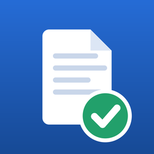
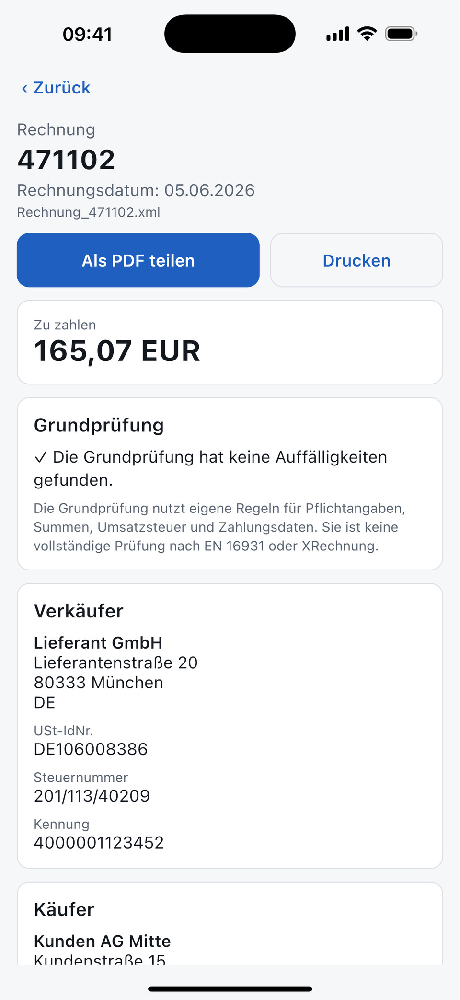

FakturioE-Rechnungen einfach lesen
Öffnen Sie XRechnung, ZUGFeRD und Factur-X direkt aus der Mail, lesen Sie sie übersichtlich und teilen Sie sie als PDF. Alles passiert auf Ihrem Gerät: ohne Konto, ohne Upload.
Demnächst für iPhone, iPad und Android

Alle gängigen Formate
XRechnung (UBL und CII), ZUGFeRD 2.x und Factur-X, auch als PDF mit eingebetteter XML-Datei, sowie Peppol BIS Billing 3.0. Das Format wird automatisch erkannt.
Alles auf einen Blick
Verkäufer und Käufer, alle Positionen, USt-Aufschlüsselung und Summen, Zahlungsdaten mit IBAN und BIC zum Kopieren, Leitweg-ID und Anlagen.
Grundprüfung
Pflichtangaben, Summen, Steuersätze und Zahlungsdaten werden mit eigenen Regeln geprüft, Auffälligkeiten verständlich erklärt. Die Grundprüfung ist keine vollständige Prüfung nach EN 16931 oder XRechnung.
Als PDF teilen und drucken
Erstellen Sie aus der E-Rechnung eine lesbare PDF-Datei für Buchhaltung, Ablage oder Kollegen, oder drucken Sie sie direkt aus.
Ihre Rechnung bleibt bei Ihnen
Rechnungen werden nur auf Ihrem Gerät gelesen. Kein Konto, kein Server, kein Tracking. Unter Android hat die App nicht einmal Internetzugriff.
Kostenlos und Pro
Kostenlos: bis zu 5 Rechnungen pro Monat, PDF-Export mit Wasserzeichen. Fakturio Pro (einmalig oder jährlich): unbegrenzt viele Rechnungen, PDF-Export und Druck ohne Wasserzeichen.